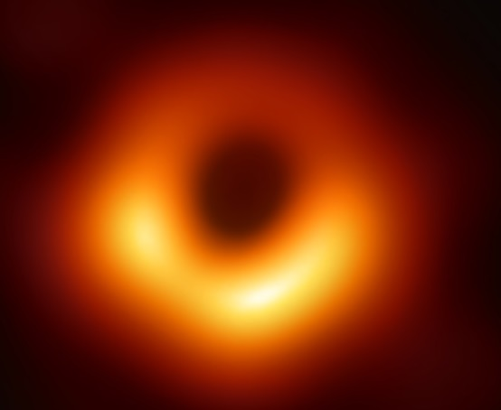

What is a Black hole
A black hole is a region of spacetime exhibiting gravitational acceleration so strong that nothing—no particles or even electromagnetic radiation such as light—can escape from it.[6] The theory of general relativity predicts that a sufficiently compact mass can deform spacetime to form a black hole.[7][8] The boundary of the region from which no escape is possible is called the event horizon. Although the event horizon has an enormous effect on the fate and circumstances of an object crossing it, no locally detectable features appear to be observed.[9] In many ways, a black hole acts like an ideal black body, as it reflects no light.[10][11] Moreover, quantum field theory in curved spacetime predicts that event horizons emit Hawking radiation, with the same spectrum as a black body of a temperature inversely proportional to its mass. This temperature is on the order of billionths of a kelvin for black holes of stellar mass, making it essentially impossible to observe.

Objects whose gravitational fields are too strong for light to escape were first considered in the 18th century by John Michell and Pierre-Simon Laplace.[12] The first modern solution of general relativity that would characterize a black hole was found by Karl Schwarzschild in 1916, although its interpretation as a region of space from which nothing can escape was first published by David Finkelstein in 1958. Black holes were long considered a mathematical curiosity; it was during the 1960s that theoretical work showed they were a generic prediction of general relativity. The discovery of neutron stars by Jocelyn Bell Burnell in 1967 sparked interest in gravitationally collapsed compact objects as a possible astrophysical reality.